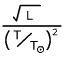

106
105
104
103
102
101
100
10-1
10-2
10-3
10-4
40000
20000
10000
5000
2300
.001
.01
.1
1
10
100
1000
Sun
M
a
i
n
S
e
q
u
e
n
c
e
Luminosity X.X (L)
Radius X.X (R)
Temperature X.X (K)
Learning Objectives
After reading the background information and working through all exercises in the HR Diagram Simulator, the student will understand...
- the importance of the HR Diagram and the significance of the main sequence
- the diagram axes and their direction of increase
- that a location on the diagram corresponds to the size of the star and an "effective" radius axis
- why a bright star in the sky is bright (considering whether they are close, intrinsically luminous, or both)
- the characteristics of a typical star (by studying nearby stars)
Background Information
The HR diagram is an astronomer's most important tool for presenting data on stars. It is a graph with some measure of luminosity L (its energy production) on the y-axis and some measure of its surface temperature T on the x-axis. Because of the solar units equation L = R2T4, specifying a star's L and T determines its radius R.
Stars do not exist with parameters corresponding to all locations of the HR Diagram. In fact, 90% of stars are found in a wide band stretching from the lower right corner to the upper left corner known as the main sequence. Stars on the main sequence are fusing hydrogen into helium in their cores and do so for the vast majority of their lives. Stars found above the main sequence are fusing other nuclei in their cores near the ends of their lives.
We can rewrite the luminosity equation as . This equation indicates that stars are large when L is large and T is small -- the upper right of the HR Diagram. We can picture a "radius axis" running from the lower left to the upper right along which radius increases. (need graphic) Lines of constant radius run perpendicular to this axis and are shown in the simulator.
Exercises
- Answer each of the following questions by specifying a location on the HR Diagram.
- Where are cool stars found?
- Where are luminous stars found?
- Where are large stars found?
- Find the star at L = 250 L and T = 5200K.
- What is the largest star you can make in this simulator?
- What is the surface temperature of a star with the same luminosity as the sun and a radius of 5 R?
- What is the size of a star that has the same surface temperature as the sun and a luminosity of 10,000 L?
- What is the luminosity of a star that is the 10 times the size of the sun and a surface temperature of 20000K?
- Select the plot entitled closest which plots the nearest 100 stars. Assuming that our region of space is similar to other regions, what are the characteristics of a typical (the most common type of) star?
- When you look out in the night sky and see a bright star -- why does that star appear bright? Realize that there are 3 possible answers: the star is a) very luminous, b) very close, or c) luminous and close. Select the plot labeled brightest. You might want to consider your answer to the previous question and also make use of the lot labeled overlap (a star in both groups).
About
This astronomy "Little Big Picture" was programmed by REU student Nick Robe. It is an early effort of the UNL Astronomy Education Group to provide materials for mobile devices. More astronomy teaching materials can be found on the web at astro.unl.edu.
This simulation makes use of the Dojo tooklit available at dojotoolkit.org.
Background image by P. van de Haar at Wide field astrophotography.